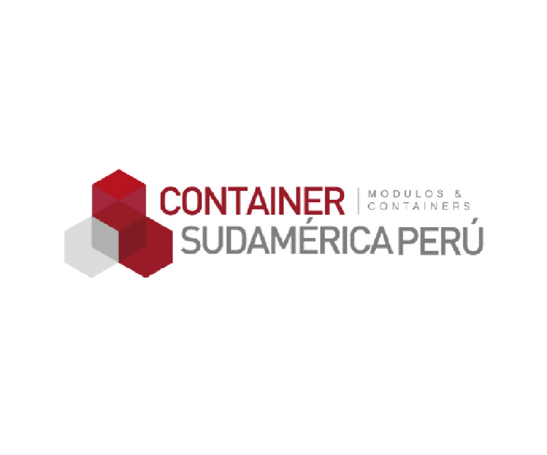
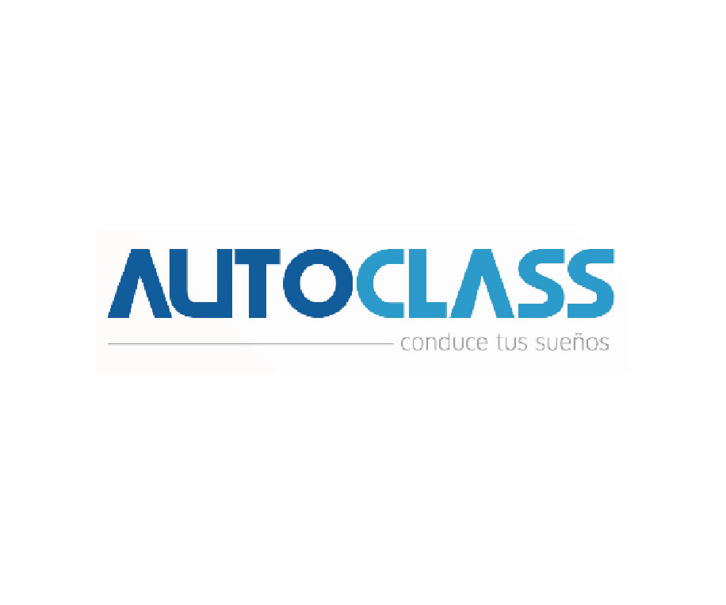
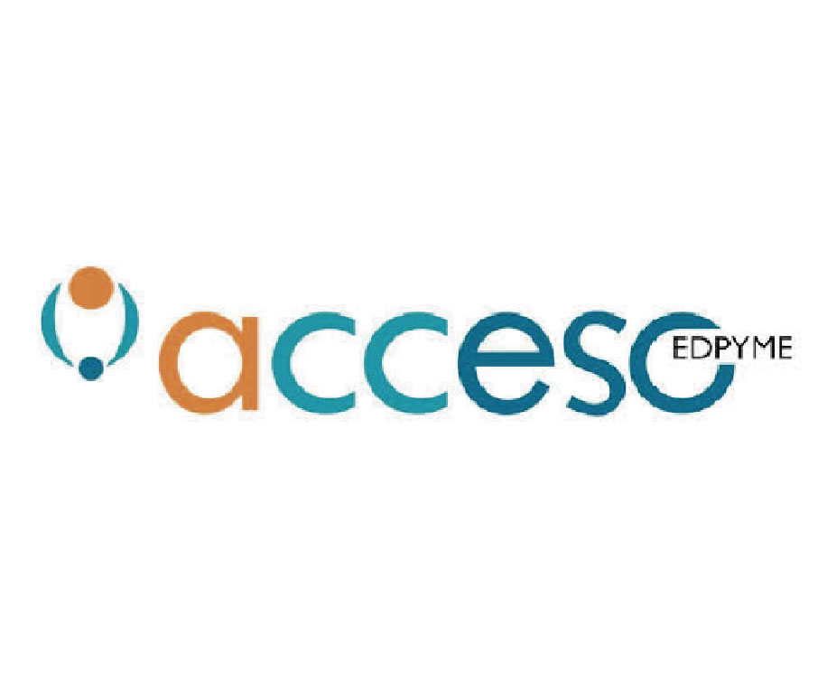
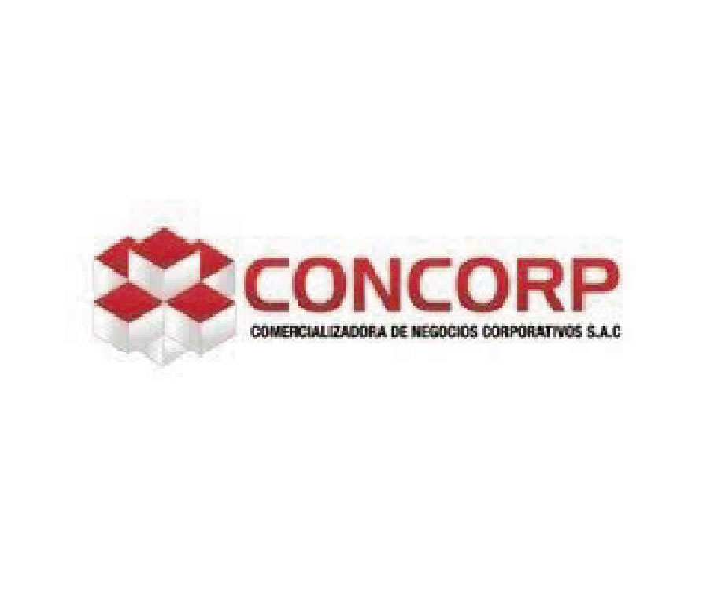
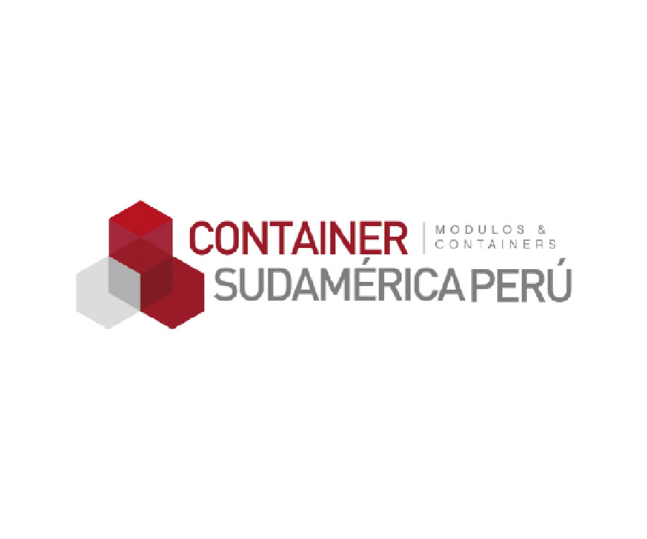
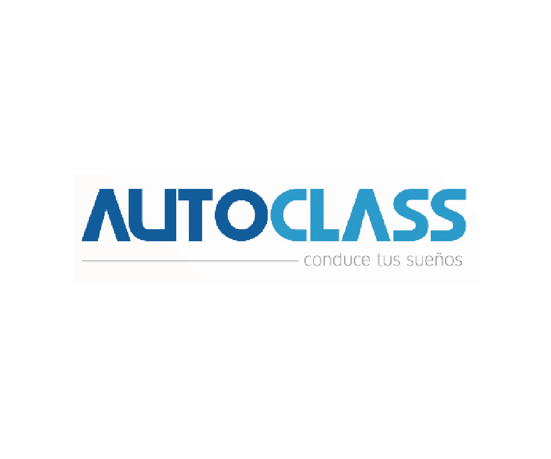
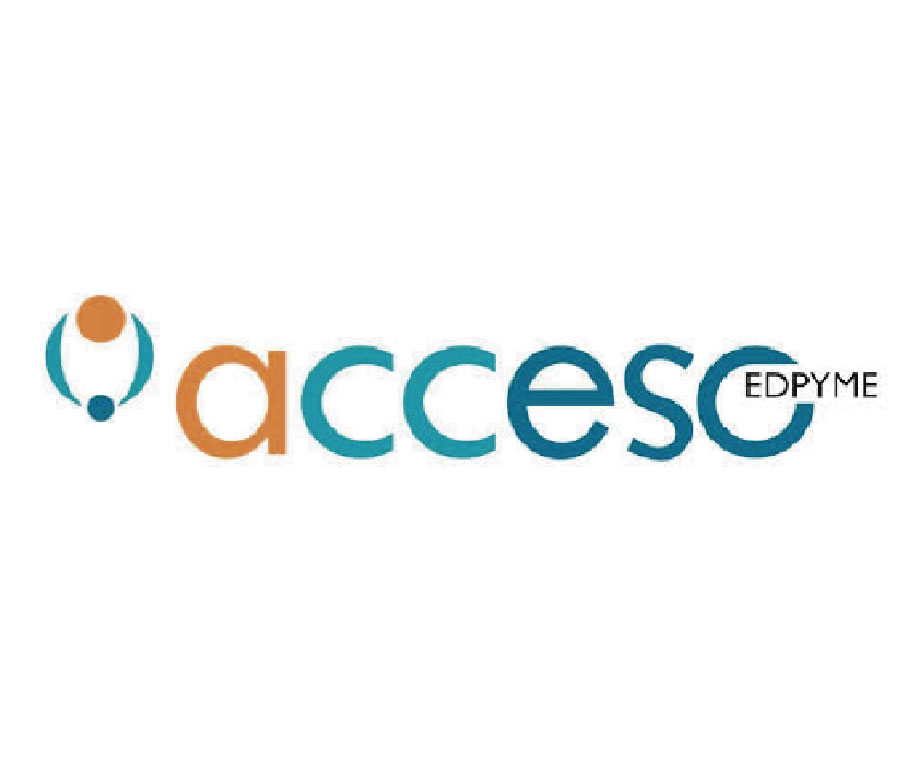
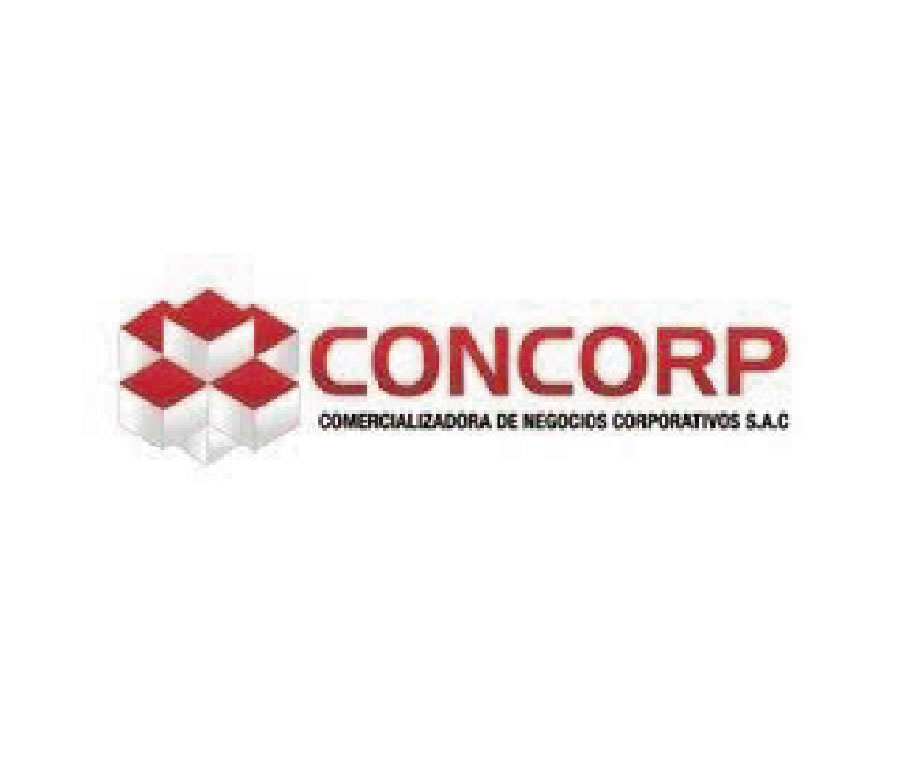

ESTRUCTURA
Y ORGANIZACIÓN EMPRESARIAL
Mapeo de procesos" Mediante la consultaría de procesos y calidad, se busca conocer los procesos de negocio, los cuales estarán encaminados al objetivo establecido en la visión de la organización. "

 
